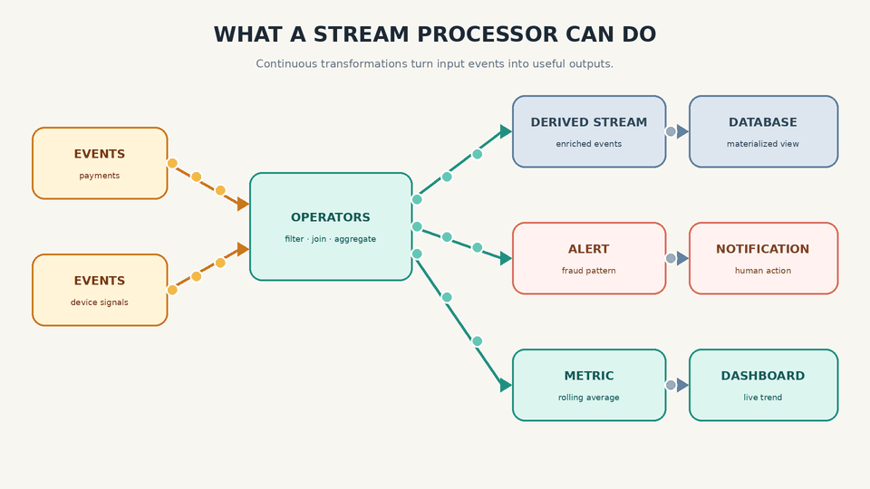

What the Stream? Phase 07
What Can You Do with a Stream?
Processing a Stream
Once we have a stream, the next question is simple: what can we do with it?
- A stream consumer can update a database, search index, or cache. Other consumers may independently read the same stream for different purposes.
- If a human is the ultimate consumer, the result can trigger an email, push notification, or another alerting mechanism.
- A processing pipeline can generate one or more derived streams from one or more input streams.
The code that performs a continuous transformation is often called an operator or a job. Operators read input records and emit derived records. Sinks may append, upsert, retract, or delete depending on the result model.

Uses of Stream Processing
Stream processing is widely used for monitoring and timely decisions. A fraud system can alert when credit-card activity is suspicious. A warehouse can detect a faulty machine. A trading system can examine price changes and react to a condition.
These applications may require pattern matching, correlation, aggregation, and managed state.
Complex Event Processing
Regular expressions search for patterns in text. Complex Event Processing, or CEP, searches for patterns in a sequence of events.
Patterns may be described with a declarative query language or a graphical interface. The processing engine maintains state as events arrive. When the expected pattern is matched, it emits a complex event containing the details of the match.
CEP commonly stores standing queries and evaluates incoming events against them. A conventional database usually stores data and evaluates a submitted query. CEP input may still be retained for replay, recovery, or audit; it is not required to be transient.
Stream Analytics
Stream analytics focuses on aggregates and statistical metrics: event rates, rolling averages, current values compared with previous values, and alerts based on those comparisons.
These metrics may be computed over time windows, count windows, sliding windows, or session windows. Averaging can reduce short-term fluctuations and expose a broader trend.
Exact computation is not always necessary or affordable. Approximate structures such as HyperLogLog, Count-Min Sketch, and t-digest can reduce state size. Bloom filters serve a more specific purpose: approximate membership testing.
Apache Flink is one open-source stream-processing framework designed for stateful processing and analytics.
Maintaining Materialized Views
A materialized view is an alternative representation of a dataset that is kept current as changes arrive. In event sourcing, application state is itself a materialized view derived from the event log.
A materialized view is accumulated state, not one giant window beginning when the application started. It can be bootstrapped from a snapshot and then maintained from subsequent changes.
Log compaction can retain the latest value for each key. It is a retention mechanism, not an approximation technique. Kafka Streams is a processing library that can maintain local state stores backed by compacted changelog topics.
Search on Streams
Sometimes an application needs complex search criteria such as full-text search. A real-estate website may need to notify users when a newly listed property matches their saved requirements.
A conventional search engine indexes documents and runs queries against that index. In reverse search, queries are indexed and each new document is matched against those standing queries. At larger scale, both documents and queries may be indexed.
Messaging, Streaming, and Request-Like Processing
Message-passing and streaming systems overlap. Either may support durable or ephemeral delivery and one or many consumers. Stream processors are distinguished mainly by continuous transformations and managed state.
Distributed stream-processing frameworks such as Apache Storm can also support request-like topologies and result aggregation. Queries can be interleaved with input events, aggregated, and returned to a caller.
A stream is not valuable because it moves data. It is valuable because it lets many independent computations react to the same sequence of facts.